BCI_50ha_abd %>%# Declare it is an "abundances" objectas_abundances() %>%autoplot()
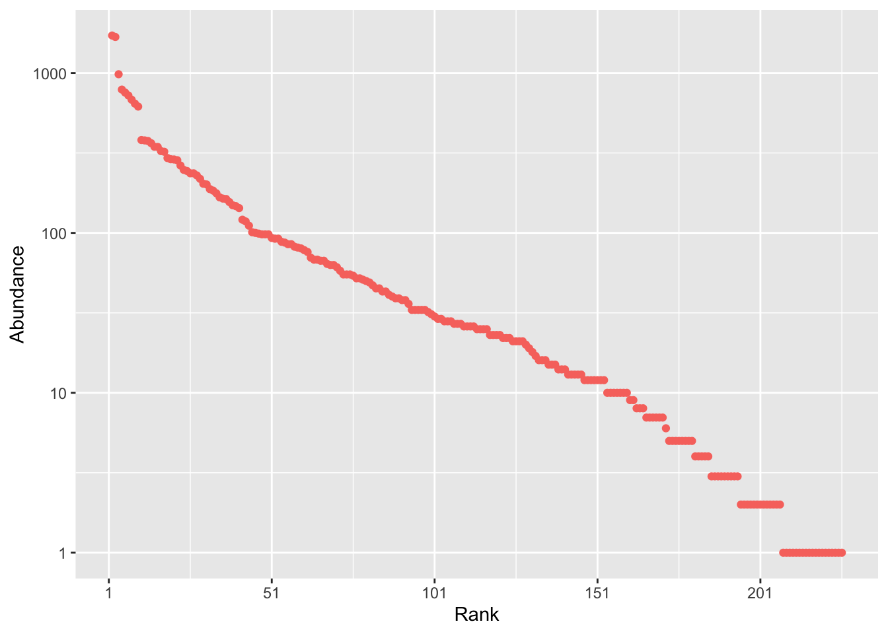
2.2 Broken stick
Random distributions are created by divent::rxxx()functions.
rcommunity(# One community1,# Number of treessize =10000,# Number of speciesspecies_number =300,# Distributiondistribution ="bstick") %>%# Whittaker plotautoplot()
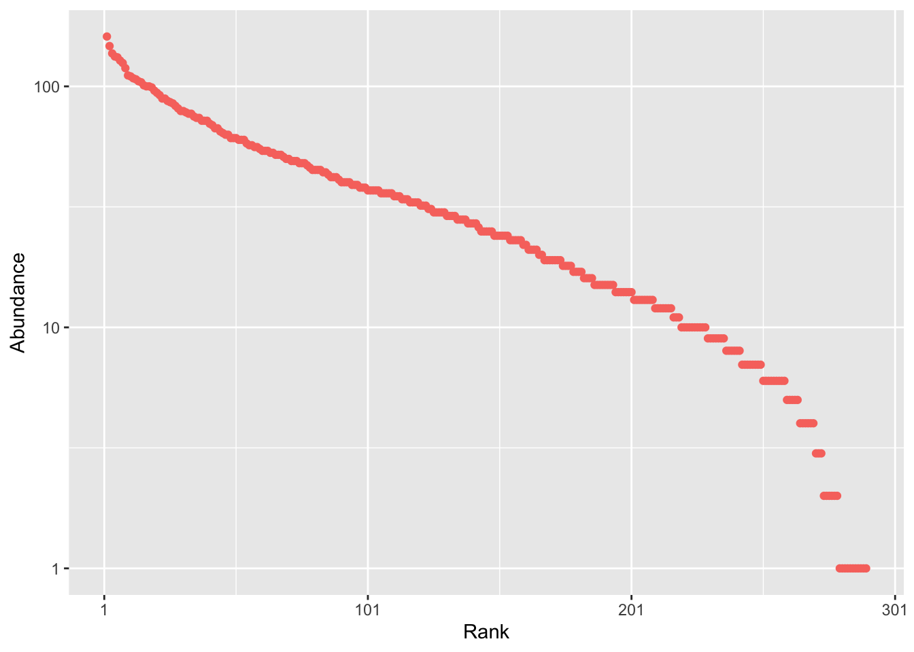
2.3 Geometric
Random distribution.
rcommunity(# One community1,# Number of treessize =10000,# Number of speciesspecies_number =300,# Distributiondistribution ="geom",prob_geom =0.1) %>%# Whittaker plotautoplot()
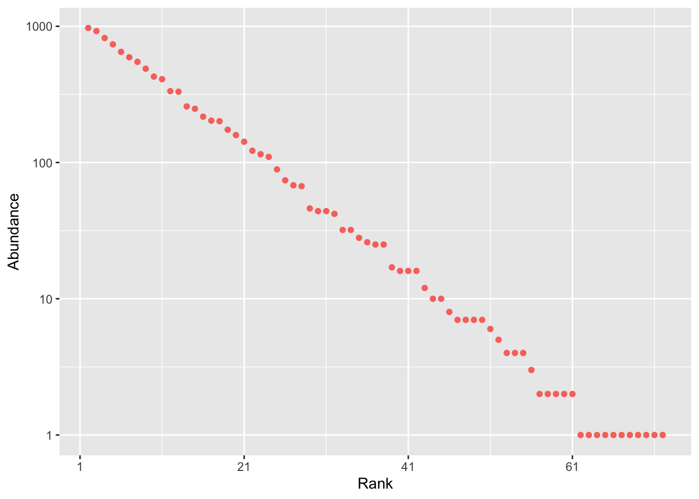
2.4 Lognormal
Random distribution.
rcommunity(# One community1,# Number of treessize =10000,# Number of speciesspecies_number =300,# Distributiondistribution ="lnorm",sd_lnorm =1) %>%# Whittaker plotautoplot()
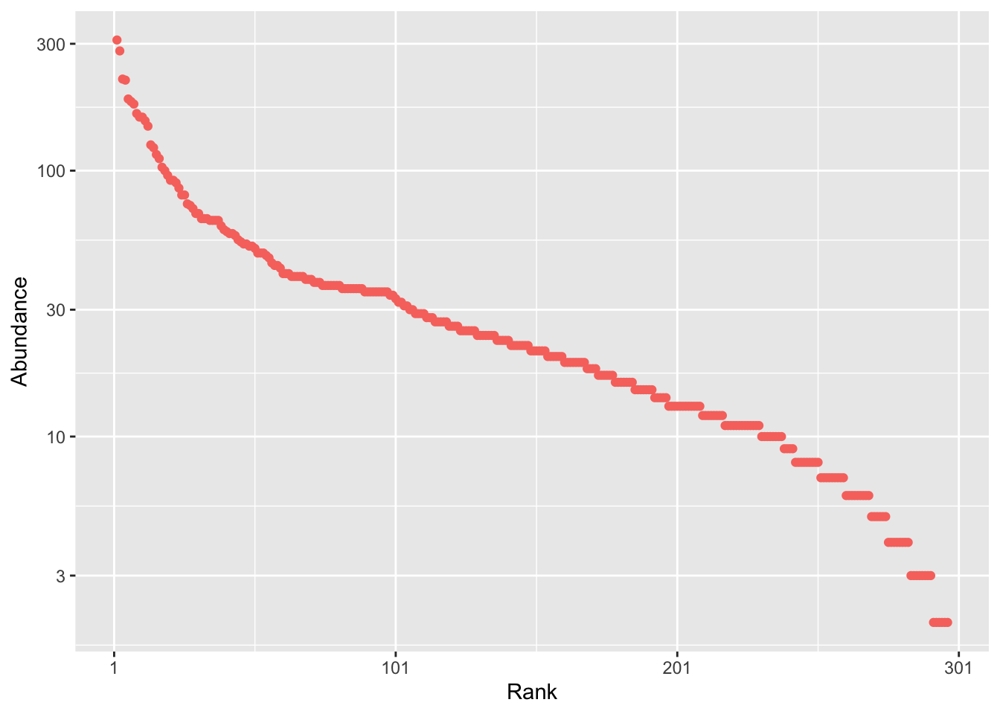
Modify the standard deviation.
2.5 Log-series
Random distribution.
rcommunity(# One community1,# Number of treessize =10000,# Number of species is calculated# Distributiondistribution ="lseries",fisher_alpha =40) %>%# Whittaker plotautoplot()
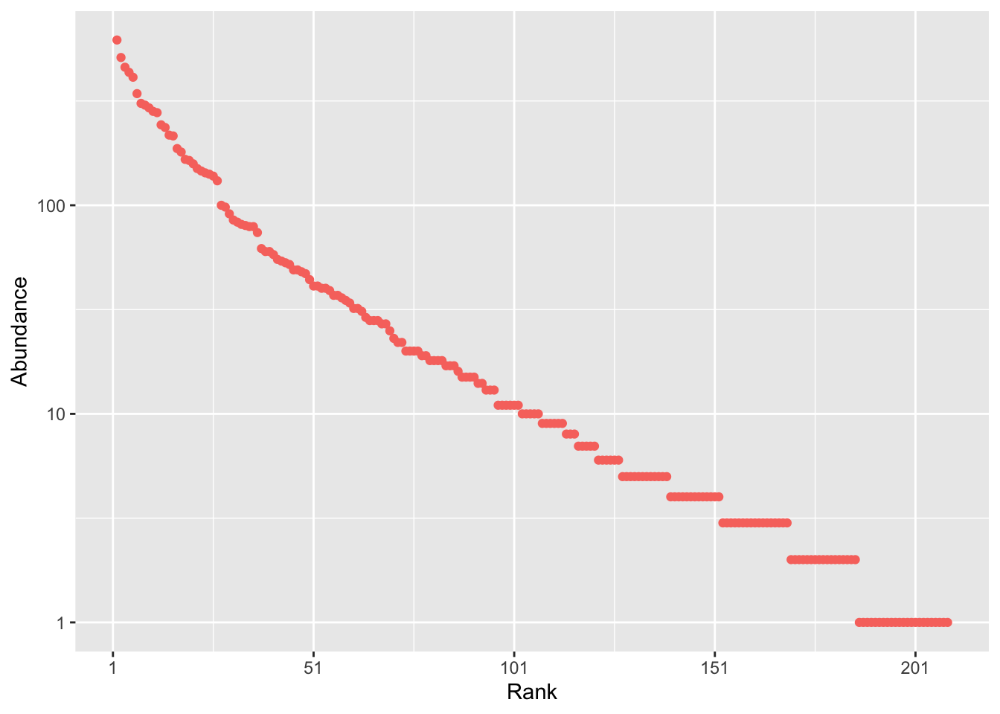
2.6 Estimate the parameters
Draw a very large lognormal distribution.
rcommunity(# One community1,# Number of trees = max supported integer valuesize = .Machine$integer.max,# Number of speciesspecies_number =300,# Distributiondistribution ="lnorm",sd_lnorm =1) %>%# Name itmutate(site ="Large log-normal") -> comm_large_lnorm
Sample it.
# Draw 3000 trees from the large communityrcommunity(1,size =3000,abd =as.numeric(comm_large_lnorm)) %>%# Name itmutate(site ="Small log-normal") -> comm_small_lnorm# Make a single tibble with all datacomm_large_lnorm %>%# Make a single tibblebind_rows(comm_small_lnorm) -> comm_lnorm# Plot the distributions and fit a lognormal modelautoplot(comm_lnorm, fit_rac =TRUE, distribution ="lnorm")
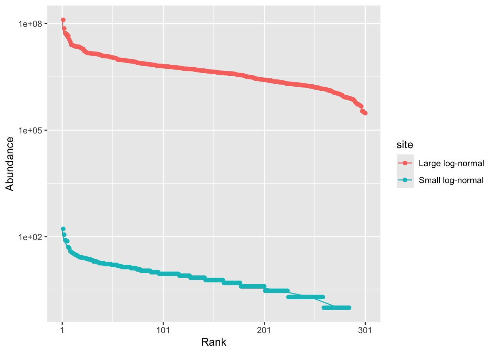
# Estimate the parametersfit_rac(comm_lnorm, distribution ="lnorm")
# A tibble: 2 × 3
site mu sigma
<chr> <dbl> <dbl>
1 Large log-normal 15.2 1.02
2 Small log-normal 1.82 1.02
3 Species Accumulation Curves
3.1 BCI data
Gather all subplots.
library("vegan")data(BCI)BCI %>%# Make an abundances objectas_abundances() %>%# Make all plot weights equalsmutate(weight =1) %>%# Gather all 50 plotsmetacommunity() %>%# Name itmutate(site ="BCI") -> BCI_allautoplot(BCI_all, fit_rac =TRUE, distribution ="lnorm")
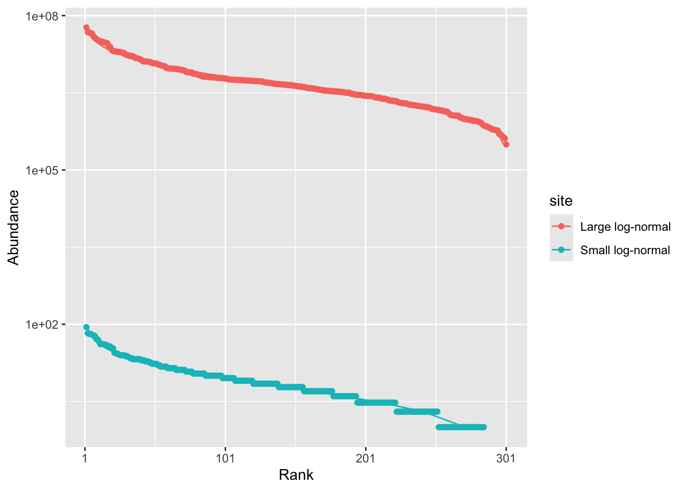
fit_rac(BCI_all, distribution ="lnorm")
# A tibble: 1 × 3
site mu sigma
<chr> <dbl> <dbl>
1 BCI 3.14 1.79
Accumulate subplots in random order (Monte-Carlo). Plot the expectation and the confidence interval of the number of species with respect to the number of samples.
BCI %>%specaccum() %>%plot()
Warning in cor(x > 0): the standard deviation is zero
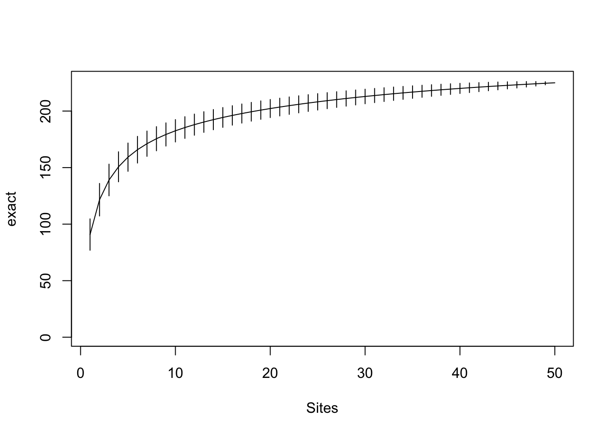
3.3 Accumulation curve
Compute the expected accumulation curve of BCI up to twice the sampling effort, with its confidence interval.
# Number of trees in BCIBCI_n <-abd_sum(BCI_all, as_numeric =TRUE)# Asymptotic richnessBCI_richness <-div_richness(BCI_all, as_numeric =TRUE)BCI_all %>%accum_hill(levels =seq(from =1, to =2* BCI_n, by =10),# Run simulations to estimate uncertainty.# Start with 10 simulations, run 100 latern_simulations =10, ) %>%autoplot() +geom_vline(xintercept = BCI_n, linetype =2) +geom_hline(yintercept = BCI_richness, linetype =1)
4 Canonical lognormal
ggplot seems to bug with weighted, bounded density and log scale.
# Number of trees per hectarep6_density <-abd_sum(p6_abundances, as_numeric =TRUE) /6.25# Richnessp6_abundances %>%div_richness(level =round(p6_density))
# A tibble: 1 × 6
site weight estimator order level diversity
<chr> <dbl> <chr> <dbl> <dbl> <dbl>
1 Paracou 6 6.25 SAC 0 567 159.
# A tibble: 1 × 6
site weight estimator order level diversity
<chr> <dbl> <chr> <dbl> <dbl> <dbl>
1 Paracou 6 6.25 jackknife 0 5666 383.
6 Shannon
6.1 Information function
Information brought by an individual: \(I(p_s) = \ln(1 / p_s)\).
ggplot() +# Increase the default number of points (101 to 1001) for precisiongeom_function(fun = \(p) {log(1/ p)}, n =1001) +labs(x ="Probability", y ="Information")
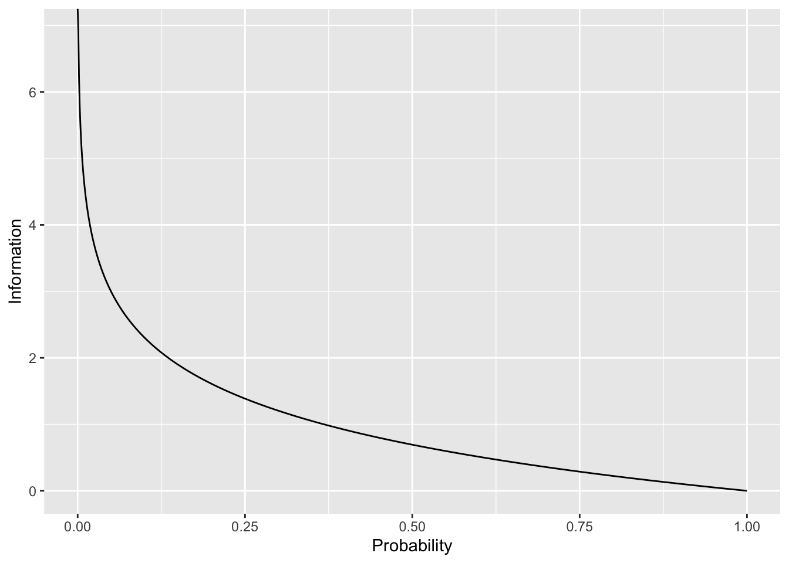
Information brought by a species: \(p_s \ln(1 / p_s)\).
ggplot() +geom_function(fun = \(p) {p *log(1/ p)}, n =1001) +labs(x ="Probability", y ="Information")
Warning: Removed 1 row containing missing values or values outside the scale range
(`geom_function()`).
Information brought by an individual: \(I(p_s) = \ln_q(1 / p_s)\).
ggplot() +# Increase the default number of points (101 to 1001) for precisiongeom_function(fun = \(p) {ln_q(1/ p, q =0)}, n =1001, aes(color ="0")) +geom_function(fun = \(p) {ln_q(1/ p, q =1)}, n =1001, aes(color ="1")) +geom_function(fun = \(p) {ln_q(1/ p, q =2)}, n =1001, aes(color ="2")) +scale_y_continuous(limits =c(0, 10)) +labs(x ="Probability", y ="Information", color ="q")
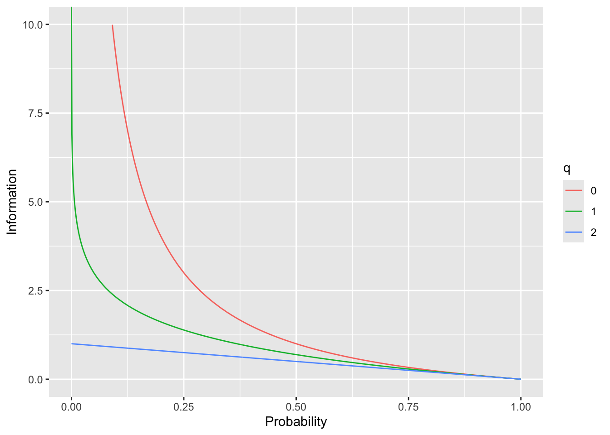
Information brought by a species: \(p_s \ln_q(1 / p_s)\).
ggplot() +# Increase the default number of points (101 to 1001) for precisiongeom_function(fun = \(p) {p *ln_q(1/ p, q =0)}, n =1001, aes(color ="0")) +geom_function(fun = \(p) {p *ln_q(1/ p, q =1)}, n =1001, aes(color ="1")) +geom_function(fun = \(p) {p *ln_q(1/ p, q =2)}, n =1001, aes(color ="2")) +labs(x ="Probability", y ="Information", color ="q")
Warning: Removed 1 row containing missing values or values outside the scale range
(`geom_function()`).
Removed 1 row containing missing values or values outside the scale range
(`geom_function()`).
8.2 Paracou 6
Diversity profile.
p6_abundances %>%profile_hill() %>%autoplot() +# Don't print the legendtheme(legend.position ="none")
Compare estimators.
p6_abundances %>%profile_hill(estimator ="UnveilJ") %>%# Use the site name to store the estimator's namemutate(site ="UnveilJ") %>%bind_rows( p6_abundances %>%profile_hill(estimator ="ChaoJost") %>%mutate(site ="ChaoJost") ) %>%bind_rows( p6_abundances %>%profile_hill(estimator ="naive") %>%mutate(site ="naive") ) %>%autoplot() +labs(color ="Estimator")
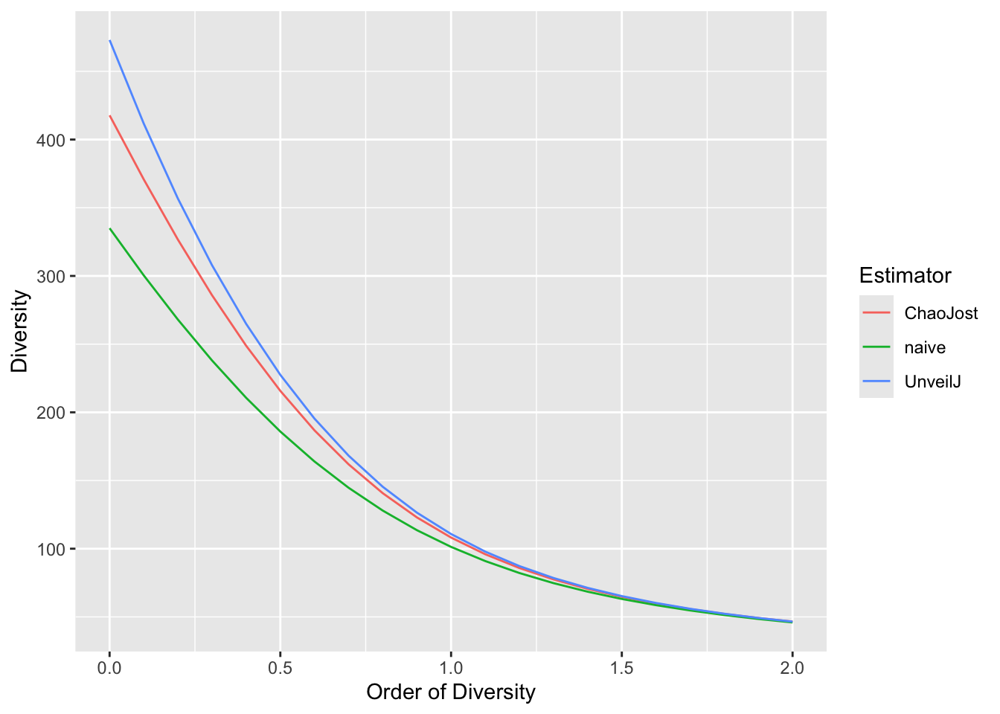
Extreme values.
The reciprocal of the Berger-Parker index (Berger and Parker 1970) is the rarity of the most abundant species \(^{+\infty}D\).
# q = 1000 is enough for infinitydiv_hill(p6_abundances, q =1000)
# A tibble: 1 × 5
site weight estimator order diversity
<chr> <dbl> <chr> <dbl> <dbl>
1 Paracou 6 6.25 UnveilJ 1000 13.3
# Compare to p6_abundances %>%# Extract proobabilitiesas_probabilities(as_numeric =TRUE) %>%# Max valuemax() %>%# Reciprocal`^`(-1)
[1] 13.31203
9 Comparing diversity
9.1 Asymptotic diversity
Compare asymptotic diversity of Paracou and BCI, extend \(q\).
# Orders from 0 to 4q_seq_0_4 <-seq(from =0, to =4, by =0.1)profile_hill(p6_abundances, orders = q_seq_0_4) %>%bind_rows(profile_hill(BCI_all, orders = q_seq_0_4)) %>%autoplot()
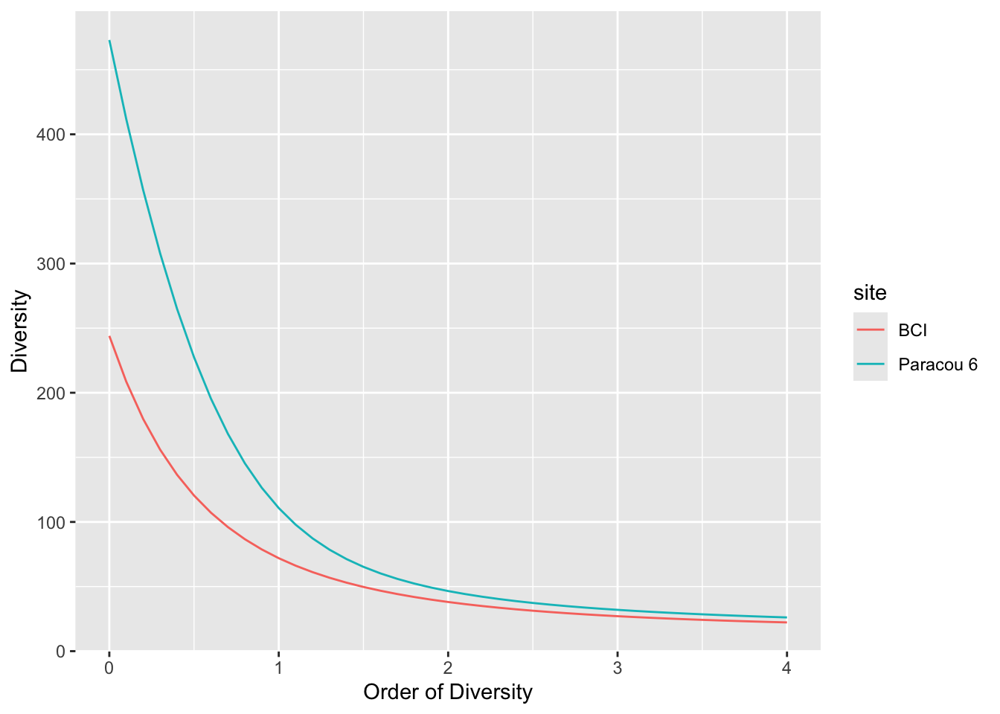
9.2 Standardized diversity
The sampling effort is very different: 50 ha in BCI, 6.25 ha in Paracou. The asymptotic estimation is less reliable in Paracou.
Compare diversity at the same sampling effort, say 10 ha.
# Number of trees in 10 hap6_n_10ha <-round(abd_sum(p6_abundances, as_numeric =TRUE) /6.25*10)BCI_n_10_ha <-round(sum(BCI_all) /5)
# A tibble: 1 × 5
site weight estimator order entropy
<chr> <dbl> <chr> <dbl> <dbl>
1 Mock 3 species 6 naive 2 0.444
11.2 Paracou 6
The species traits are maximum height (95th percentile) and seed mass, maximum height (95th percentile) and seed mass. A distance matrix was built (see home practical). Distribution of distances between species.
Coordinates of species A, B and C in the trait space.
mock_pcoa$li
A1 A2
A -0.6454972 5.000000e-01
B -0.6454972 -5.000000e-01
C 1.2909944 2.950698e-16
Plot individuals in the trait space, with a small variability.
# Create coordinatestibble(Species =rep(names(mock_3sp_abd), times = mock_3sp_abd),x =rep(mock_pcoa$li[, 1], times = mock_3sp_abd),y =rep(mock_pcoa$li[, 2], times = mock_3sp_abd)) -> mock_3sp_ind# Choose variabilityvariability <-0.1# Mapmock_3sp_ind %>%# Add variabilitymutate(x = x +rnorm(n(), mean =0, sd = variability),y = y +rnorm(n(), mean =0, sd = variability) ) %>%ggplot(aes(x = x, y = y, color = Species)) +geom_point() +coord_fixed()
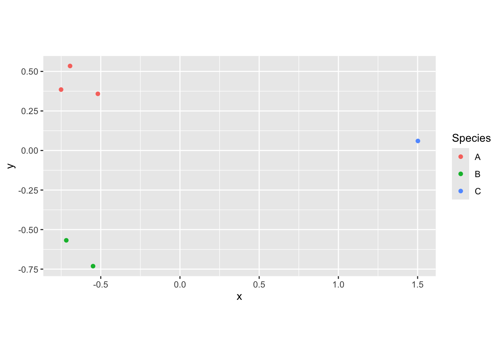
Diversity of the 6 individuals. First, without variability.
# Choose variabilityvariability <-0# Create the point setmock_3sp_ind %>%# Add variabilitymutate(x = x +rnorm(n(), mean =0, sd = variability),y = y +rnorm(n(), mean =0, sd = variability) ) %>%# Distance matrixdist() %>%as.matrix() -> mock_6ind_dist
Warning in dist(.): NAs introduced by coercion
# Delete the row and column name of the matrix (they are not species names)rownames(mock_6ind_dist) <-colnames(mock_6ind_dist) <-NULL# Total abundancemock_6ind_n <-nrow(mock_6ind_dist)# Similaritymock_6ind_Z <-1- mock_6ind_dist /max(mock_6ind_dist)# Abundances of individuals are 1, or any identical valuemock_6ind_abd <-rep(1, mock_6ind_n)# Diversityprofile_similarity( mock_6ind_abd, similarities = mock_6ind_Z,estimator ="naive") %>%autoplot()
Change the variability (0.1 first) and run the code again.
# Values of q used for computation: default values of profile_xxx()orders <-seq(from =0, to =2, by =0.1)sapply(# Apply ent_tsallis to all orders orders,FUN = \(q) {# Get a number to obtain a matrix with sapplyent_tsallis(paracou_6_abd, q = q, as_numeric =TRUE) }) %>%# Each row contains a subbplot, each column an order, values are entropy# Calculate mean entropy (weights are equal)colMeans() %>%# Diversityexp_q(q = orders) %>%# Make a tibbletibble(order = orders,div_alpha = . ) %>%print() -> paracou_6_alpha_profile
paracou_6_profile %>%# paracou_6_profile is an object of class profile that can be plotted# The column to plot must be named diversityrename(diversity = div_alpha) %>%autoplot() +theme(legend.position ="none")
Berger, Wolfgang H., and Frances L. Parker. 1970. “Diversity of Planktonic Foraminifera in Deep-Sea Sediments.”Science 168 (3937): 1345–47. https://doi.org/10.1126/science.168.3937.1345.
Chao, Anne, and Lou Jost. 2012. “Coverage-Based Rarefaction and Extrapolation: Standardizing Samples by Completeness Rather Than Size.”Ecology 93 (12): 2533–47. https://doi.org/10.1890/11-1952.1.